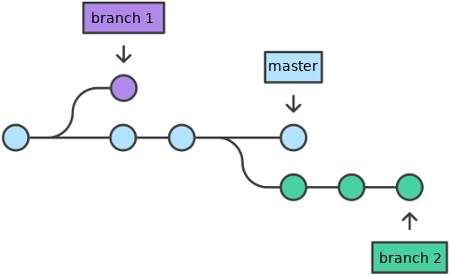

Introdução ao Git e GitHub
GES-139 - Departamento de Estatística, Universidade Federal de Lavras (UFLA)
1 Perdendo o medo do Terminal
O terminal é uma interface de linha de comando que permite aos usuários interagir com o sistema operacional usando comandos de texto. Embora possa parecer intimidador no início, o terminal é uma ferramenta poderosa que pode aumentar significativamente a eficiência e a produtividade.
Abra o terminal
- Windows: Pressione
Win, digitegit bashe pressione Enter. - macOS: Pressione
Cmd + Space, digiteTerminale pressione Enter.
1.1 Comandos Básicos
O comando pwd (Print Working Directory) mostra o caminho completo da pasta atual.
$ pwdO comando ls e ls -a (List) lista os arquivos e pastas no diretório atual.
$ ls
$ ls -aO comando cd (Change Directory) é usado para navegar entre pastas.
$ cd nome_da_pastaDica:
- Comece a digitar o nome da pasta e pressione
Tabpara autocompletar.
O comando cd .. é usado para voltar para a pasta anterior.
$ cd ..Para limpar a tela do terminal, use o comando clear.
$ clearOu simplesmente usar o atalho de teclado: Ctrl + L (muito mais rápido e prático!).
1.2 Resumo dos Comandos
pwd: Mostra onde está.ls: Lista o que tem.cd [nome_da_pasta]: Muda de pasta.cd ..: Volta para a pasta anterior.clear: Limpa a tela.
2 A Magia do Git
O git transforma a pasta comum em um repositório, permitindo que você controle as mudanças, colabore com outros e mantenha um histórico de tudo o que foi feito.
2.1 Iniciando um Repositório Git
Para transformar uma pasta comum em um repositório git, basta usar o comando git init dentro da pasta desejada (use o comando cd para navegar para a pasta desejada).
$ git initO comando git status é, talvez, o mais importante de todos. Ele mostra o status do seu repositório, indicando quais arquivos foram modificados e quais foram adicionados.
$ git statusUse o git status o tempo todo! Digite antes de fazer qualquer coisa, durante e depois. Ele evita que você cometa erros e quebre o repositório.
O comando git add [nome_do_arquivo].formato é usado para adicionar arquivos ao stage, preparando-os para serem commitados.
$ git add nome_do_arquivo.txtAgora que você adicionou o arquivo ao stage, é hora de fazer o commit. O comando git commit -m "mensagem do commit" salva as mudanças no repositório com uma mensagem descritiva. É como se tirasse uma “foto” do projeto usando o comando git commit.
$ git commit -m "Adicionando o arquivo de exemplo"Boas práticas no Commit Seja claro na sua mensagem! Imagine você lendo essa mensagem daqui a 6 meses. Evite mensagens como “git commit -m ‘arrumei’” ou “git commit -m ‘coisas’”. Prefira: “git commit -m ‘Corrige o cálculo da média na linha 42’”. Siga um padrão de mensagens para facilitar a compreensão do histórico do projeto.
Provavelmente será necessário fazer algumas configuraçõesno git antes de realizar o primeiro commit.
O Git precisa saber quem é você. Pense nisso como a assinatura de um documento. Toda vez que você salvar uma versão do seu trabalho, o Git vai carimbar o seu nome e e-mail nela.
$ git config --global user.name "Seu Nome"
$ git config --global user.email "Seu E-mail"Como usamos a opção –global, você só precisa fazer essa configuração uma única vez no seu computador. O Git vai lembrar de você para todos os projetos futuros.
Se tiver vários arquivos para serem comitados, use o comando git add . para adicionar todos os arquivos modificados de uma vez.
$ git add .Use o comando git log para visualizar o histórico de commits do seu repositório.
$ git log Caso tenha adicionado um arquivo por engano, use o comando git reset [nome_do_arquivo] para removê-lo do stage.
$ git reset [nome_do_arquivo]Para ver a diferença entre o arquivo modificado e a última versão comitada, use o comando git diff [nome_do_arquivo] ou git diff . para ver as diferenças de todos os arquivos.
$ git diff [nome_do_arquivo]
$ git diff .2.2 Criando nova branch

Branch é como uma linha do tempo paralela do seu projeto. Ela permite que você trabalhe em novas funcionalidades ou correções de bugs sem afetar a versão principal do código (geralmente chamada de “main” ou “master”). Para criar uma nova branch, use o comando git checkout -b [nova_branch].
$ git checkout -b [nova_branch]Para conferir em qual branch você está, use o comando git branch.
$ git branchPara trocar para outra branch, use o comando git checkout [nome_da_branch].
$ git checkout [nome_da_branch]Apos criar um arquivo e comitar as mudanças na nova branch, é hora de juntar as mudanças da nova branch com a branch principal. Para isso, use o comando git merge [nome_da_branch] estando na branch principal (use o comando git checkout main para isso).
$ git checkout main
$ git merge [nome_da_branch]Para apagar uma branch, use o comando git branch -d [nome_da_branch]. Você só pode apagar uma brancha estando em outra branch (use o comando git checkout main para isso). Confira se a branch que você quer apagar já foi mergeada com a branch principal!
$ git checkout main
$ git branch -d [nome_da_branch]2.3 Resolvendo Conflitos
Às vezes, quando duas pessoas editam o mesmo arquivo e tentam fazer merge, o Git não sabe qual versão escolher. Isso é chamado de conflito. O Git vai marcar o arquivo com os conflitos usando símbolos como <<<<<<<, ======= e >>>>>>>. Para resolver o conflito, abra o arquivo, escolha quais mudanças manter e remova os símbolos de conflito. Depois disso, adicione o arquivo ao stage e faça um commit para finalizar a resolução do conflito.
$ git add [nome_do_arquivo]
$ git commit -m "Resolvendo conflito no arquivo [nome_do_arquivo]"<<<<<< HEAD indica a versão atual do arquivo na branch onde você está. ======= separa as duas versões do arquivo. >>>>>>> [nome_da_branch] indica a versão do arquivo na branch que você está tentando mergear.
Lembre-se: Você escolhe quais mudanças manter.
2.4 GitHub: O Lar dos Repositórios
Como criar conta no GitHub.
- Acesse o site do GitHub: github.com
- No canto superior direito, clique em “Sign up” (Criar uma conta).
- Crie a conta utilizando a conta google (ou Apple) e adicione o nome de usuário ou,
- preencha os campos de nome de usuário, e-mail e senha e crie a conta.
Criando o rerpositório personalizado
Repositórios são como pastas online onde você pode armazenar e compartilhar seu código.
- Clique em repositories (repositórios) e depois em “New” (Novo).
- Dê um nome para o seu repositório. Neste caso, de o nome igual ao seu nome de usuário do GitHub, para que o repositório seja personalizado.
- Deixe a opção “Public” (Público) selecionada para que outras pessoas possam ver seu repositório.
- Marque a opção “add README”
Algumas paginas do github para se inspirar: - Mine Çetinkaya-Rundel - Beatriz Milz - Rafael Irizarry - Izzy Terra
Repositorio do projeto
- Crie um respositorio no github, sem Readme, sem .gitignore e sem licença.
- Copie o link do repositório criado. git remote add origin [link_do_repositório] (considere que o já existe um repositório)
$ git remote add origin [link_do_repositório]O comando git remote add origin é usado para conectar seu repositório local ao repositório remoto no GitHub.
- Caso não esteja na branch main, use o comando
git branch -M mainpara renomear a branch atual para main.
$ git branch -M main- Use o comando
git push -u origin mainpara enviar as mudanças para o repositório remoto. Antes de usar esse comando, certifique-se de ter feito o commit das mudanças locais.
$ git status
$ git add .
$ git commit -m "[mensagem_do_commit]"
$ git push -u origin mainPossivelmente será necessário fazer login no GitHub para autenticar o push. Siga as instruções na tela para concluir o processo de autenticação.